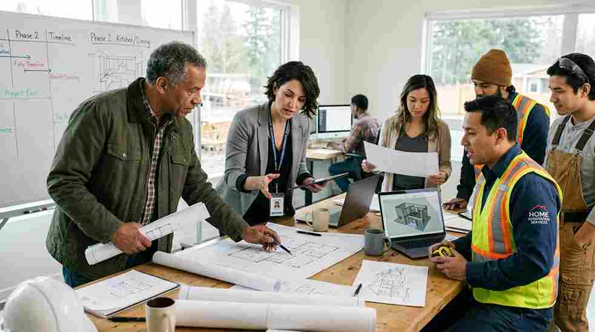
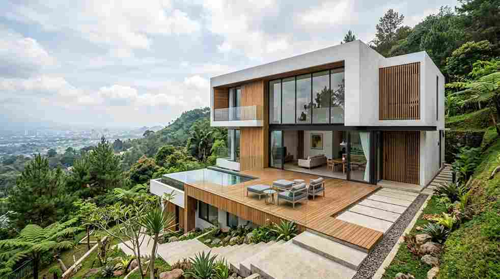
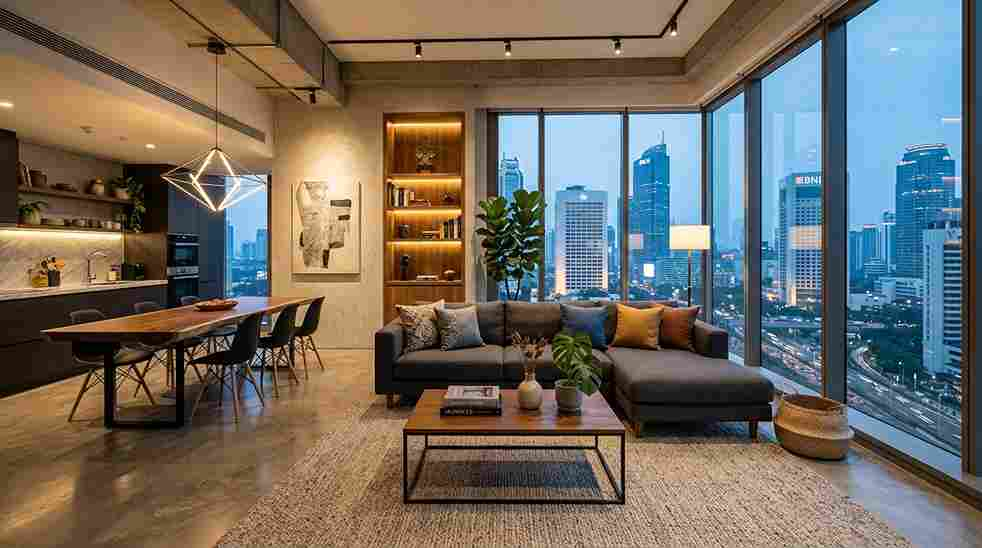
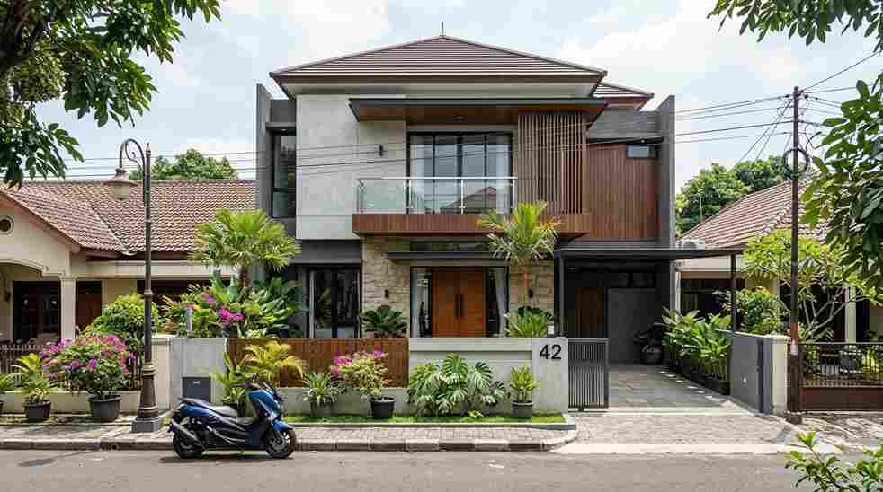

Jasa Arsitek
Perencanaan desain arsitektur yang fungsional, estetis, dan sesuai regulasi bangunan.
Pelajari Lebih LanjutArsitek • Kontraktor • Desain Interior
Jasa renovasi rumah, jasa arsitek, dan jasa kontraktor bangunan profesional yang mengutamakan kualitas, ketepatan waktu, dan garansi pekerjaan. Dipercaya ratusan klien di seluruh Indonesia.
Proyek Selesai
Tahun Pengalaman
Klien Puas
Tim Profesional

Tentang Kami
Sejak berdiri, kami berkomitmen menghadirkan layanan jasa renovasi rumah yang mengutamakan presisi desain, kualitas material, dan kejujuran anggaran. Tim arsitek dan kontraktor kami menangani proyek mulai dari renovasi rumah tinggal, pembangunan gedung, hingga desain interior premium.
Setiap proyek dikerjakan dengan pendekatan konsultatif — mendengarkan kebutuhan klien, menyusun gambar kerja yang detail, dan mengawal pelaksanaan hingga serah terima dengan garansi pekerjaan.
Selengkapnya Tentang KamiLayanan Kami
Dari perencanaan arsitektur hingga sentuhan akhir interior, kami hadir sebagai mitra tunggal yang menangani seluruh proses pembangunan dan renovasi rumah Anda.
Perencanaan desain arsitektur yang fungsional, estetis, dan sesuai regulasi bangunan.
Pelajari Lebih LanjutPembangunan dan renovasi rumah tinggal dengan manajemen proyek yang rapi dan tepat waktu.
Pelajari Lebih LanjutPenanganan proyek skala besar seperti ruko, gedung komersial, dan fasilitas usaha.
Pelajari Lebih LanjutRenovasi total maupun parsial untuk bangunan lama menjadi lebih modern dan tahan lama.
Pelajari Lebih LanjutPenataan ruang dan pemilihan material interior untuk kenyamanan serta nilai estetika tinggi.
Pelajari Lebih LanjutKonsultasi struktur, perizinan bangunan (IMB/PBG), hingga perawatan berkala pasca-renovasi.
Pelajari Lebih LanjutPortofolio



Testimoni
"Proses renovasi rumah kami berjalan sangat rapi, komunikasi tim selalu jelas dan hasil akhirnya melebihi ekspektasi."
— Bapak Andi, Malang
"Tim arsitek memberi banyak masukan desain yang membuat rumah kami terasa jauh lebih luas dan nyaman."
— Ibu Sinta, Surabaya
"Pengerjaan tepat waktu sesuai kontrak dan ada garansi, jadi kami merasa aman menggunakan jasa ini."
— Bapak Reza, Bekasi
Blog & Tips
Temukan tips, panduan, dan inspirasi seputar renovasi rumah, desain interior, dan konstruksi dari tim ahli kami.

Desain Rumah • 23 Agustus 2026
Temukan 15 inspirasi desain rumah minimalis modern 2026 yang estetik, hemat lahan, dan fungsional. Konsultasikan denah impian Anda bersama arsitek berpengalaman.
Baca Selengkapnya
Biaya Bangun • 23 Agustus 2026
Pelajari cara menghitung biaya bangun rumah per m2 tahun 2026 secara akurat, lengkap tabel kisaran harga material standar vs premium dan tips hemat RAB.
Baca Selengkapnya
Jasa Renovasi • 23 Agustus 2026
Jasa renovasi rumah Jakarta berpengalaman, pengerjaan cepat, RAB transparan, dan bergaransi resmi. Konsultasi dan survey lokasi gratis, hubungi tim kami sekarang.
Baca SelengkapnyaKonsultasi Gratis
Jadikan setiap sudut rumah lebih nyaman dan modern. Konsultasikan kebutuhan ruang Anda dengan tim arsitek dan kontraktor ahli kami sekarang.
Hubungi via WhatsApp